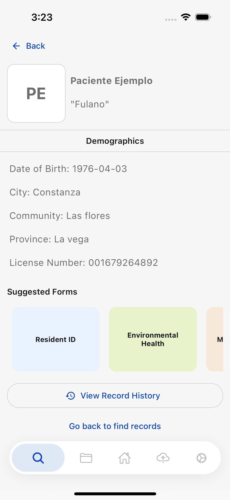

The ideaLa idea
Most people you visit are already in Puente. They were surveyed on an earlier round, by you or by a colleague. When you find their existing record and add to it, everything about that person stays in one place. When you cannot find them and create a new one, their history splits in two, and nobody downstream can tell that the two records are the same human being.
La mayoría de las personas que visitas ya están en Puente. Fueron encuestadas en una ronda anterior, por ti o por un colega. Cuando encuentras su registro existente y le agregas información, todo sobre esa persona queda en un solo lugar. Cuando no la encuentras y creas una nueva, su historial se divide en dos, y nadie más adelante puede saber que los dos registros son la misma persona.
So the search is not a convenience. It is the step that decides whether this visit joins the person's history or starts a second one beside it.
Por eso la búsqueda no es una comodidad. Es el paso que decide si esta visita se une al historial de la persona o empieza un segundo historial al lado.
What the search readsQué lee la búsqueda
The box on Search Individual looks at five things about each resident:
El cuadro en Buscar Individuo mira cinco datos de cada residente:
- First nameNombre
- Last nameApellido
- Nickname — the name people actually call themApodo — como la gente realmente le dice
- Licence number — the cédulaNúmero de cédula
- Household IDID del hogar

Capital letters do not matter. Typing paciente, Paciente or
PACIENTE all find the same person.
Las mayúsculas no importan. Escribir paciente, Paciente o
PACIENTE encuentra a la misma persona.
Type the start, not the middleEscribe el principio, no el medio
This is the one thing worth remembering. The search matches the beginning of one field — so it finds a first name, or a last name, or a nickname. It does not search across two fields at once, and it does not look inside a word.
Esto es lo único que vale la pena recordar. La búsqueda coincide con el principio de un campo — encuentra un nombre, o un apellido, o un apodo. No busca en dos campos a la vez, ni dentro de una palabra.
For a resident recorded as Paciente Ejemplo:
Para un residente registrado como Paciente Ejemplo:
| You typeEscribes | ResultResultado |
|---|---|
Paciente | Found — it is the first nameEncontrado — es el nombre |
Ejemplo | Found — it is the last nameEncontrado — es el apellido |
Paciente Ejemplo | Nothing. No single field starts with the whole nameNada. Ningún campo empieza con el nombre completo |
ciente | Nothing. It is the middle of a word, not the startNada. Es el medio de una palabra, no el principio |
An empty result is not proof the person is new. It is far more often a full name typed into a box that reads one field at a time. Try the surname on its own, then the first name on its own, then the nickname, before you decide to create anyone.
Un resultado vacío no prueba que la persona sea nueva. Casi siempre es un nombre completo escrito en un cuadro que lee un campo a la vez. Prueba el apellido solo, luego el nombre solo, luego el apodo, antes de decidir crear a alguien.
Searching by IDBuscar por cédula
If the person has their cédula with them, it is the surest way to find them — names get spelled several ways, an ID does not. You can type just the first few digits.
Si la persona tiene su cédula a mano, es la forma más segura de encontrarla — los nombres se escriben de varias maneras, una cédula no. Puedes escribir solo los primeros dígitos.

This needs Collect 15.7.2 or later. In earlier versions the box said "Search by name or ID" but only ever read the two name fields, so a cédula returned nothing at all. If typing an ID finds no one, check your app version before concluding the person is not in Puente.
Esto requiere Collect 15.7.2 o posterior. En versiones anteriores el cuadro decía "Buscar por nombre o ID" pero solo leía los dos campos de nombre, así que una cédula no devolvía nada. Si al escribir una cédula no aparece nadie, revisa la versión de la aplicación antes de concluir que la persona no está en Puente.
When you find themCuando lo encuentras
Tap the card to open the person. From there you can start a new form for them — and it attaches to the record they already have, instead of starting a new one.
Toca la tarjeta para abrir a la persona. Desde ahí puedes empezar un formulario nuevo para ella — y se adjunta al registro que ya tiene, en vez de empezar uno nuevo.


Searching with no signalBuscar sin señal
Search works without a connection, but it can only look at the residents already saved on the phone. The app fills that store whenever you open Find Records with a connection, so the habit that matters is simple: open Find Records once while you still have signal, before you head out.
La búsqueda funciona sin conexión, pero solo puede mirar a los residentes ya guardados en el teléfono. La aplicación llena ese almacén cada vez que abres Buscar Registros con conexión, así que el hábito importante es simple: abre Buscar Registros una vez mientras aún tienes señal, antes de salir.

If you work in a community with more residents than the limit, raise it before you travel. A bigger store takes longer to download and uses more space on the phone, so raise it to fit the community rather than as high as it will go.
Si trabajas en una comunidad con más residentes que el límite, súbelo antes de viajar. Un almacén más grande tarda más en descargarse y ocupa más espacio en el teléfono, así que súbelo para que quepa la comunidad, no al máximo posible.
Offline, the search also reads the nickname of anyone still waiting in your sync queue, so someone you surveyed an hour ago and have not sent yet still turns up.
Sin conexión, la búsqueda también lee el apodo de quien siga esperando en tu cola de sincronización, así que alguien que encuestaste hace una hora y aún no has enviado también aparece.
What a second record costsQué cuesta un segundo registro
Nothing breaks when a person gets entered twice. That is exactly why it is worth care — the app will not warn you, and the cost lands somewhere else, later:
Nada se rompe cuando una persona se registra dos veces. Precisamente por eso vale la pena tener cuidado — la aplicación no te avisará, y el costo aparece en otro lugar, después:
- The person's history is split. A nurse reading one record cannot see what was collected into the other.El historial de la persona queda dividido. Una enfermera que lee un registro no puede ver lo que se recolectó en el otro.
- Counts go up without anyone being reached. Two records look like two people in every total, including the ones that go to funders.Los conteos suben sin que se haya llegado a nadie más. Dos registros parecen dos personas en todos los totales, incluidos los que van a los financiadores.
- Someone has to untangle it by hand, months later, usually by asking the surveyor what happened.Alguien tiene que desenredarlo a mano, meses después, normalmente preguntándole al encuestador qué pasó.
If you realise afterwards that you created a second record for someone, tell your coordinator with both names and the date. It is far easier to merge two records you know about than to find them later.
Si después te das cuenta de que creaste un segundo registro para alguien, avísale a tu coordinador con ambos nombres y la fecha. Es mucho más fácil unir dos registros que conoces que encontrarlos después.
Rules of thumbReglas prácticas
- Search before you create. Every time, even when you are fairly sure they are new.Busca antes de crear. Siempre, incluso cuando estés bastante seguro de que es alguien nuevo.
- One field at a time. Surname alone, then first name alone, then nickname. Never the full name.Un campo a la vez. Apellido solo, luego nombre solo, luego apodo. Nunca el nombre completo.
- Ask for the cédula when a name search comes up empty. It is the one identifier that does not get spelled two ways.Pide la cédula cuando la búsqueda por nombre no dé resultados. Es el único identificador que no se escribe de dos maneras.
- Open Find Records while you still have signal, so the phone has people to search when you lose it.Abre Buscar Registros mientras aún tienes señal, para que el teléfono tenga a quién buscar cuando la pierdas.
- Check the record history before adding to someone. It is how you know it is the same person and not a namesake.Revisa el historial de registros antes de agregarle algo a alguien. Así sabes que es la misma persona y no un homónimo.